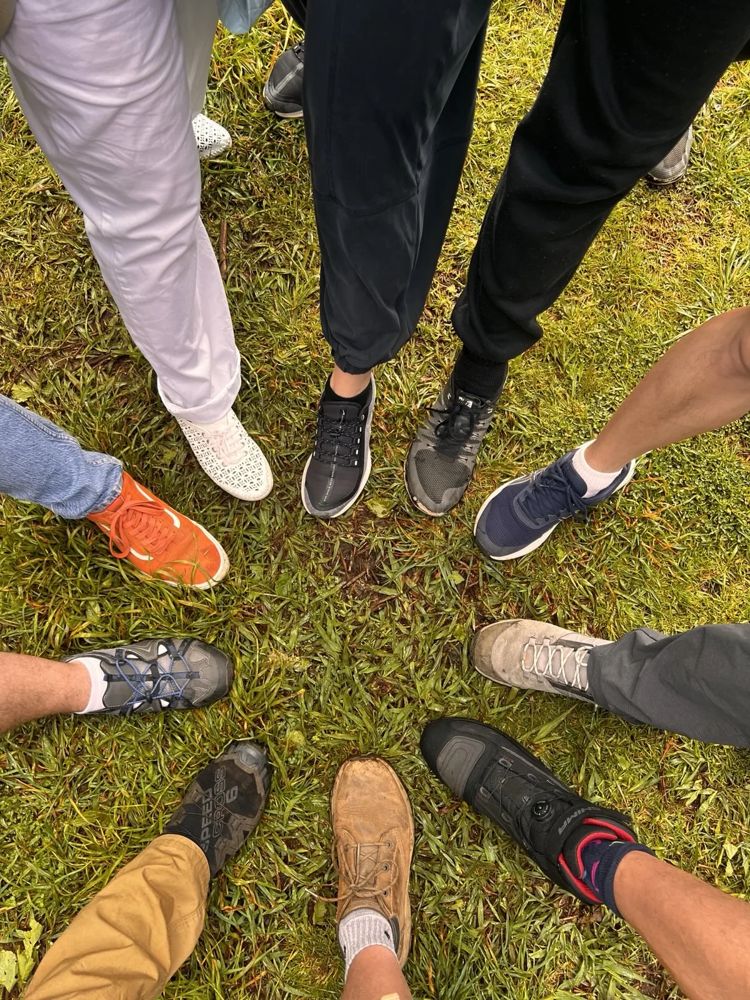
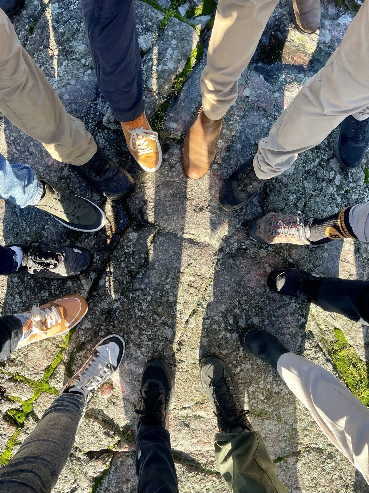
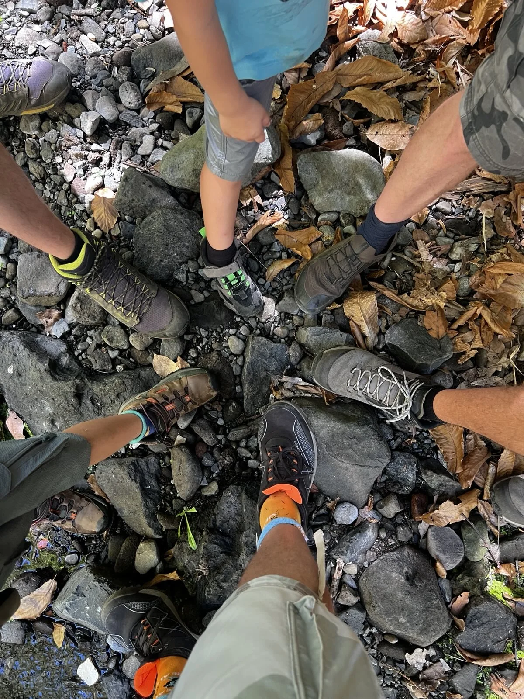

Good company.
One walk at a time.
SatWalk is a weekly Saturday walking meetup. Meet your neighbours, take a stroll and talk about what freedom means to you.



Find a walk
Loading walks…
Every Saturday
A walk and a talk about freedom.
Pick a familiar route and walk at a pace that leaves room for conversation. Bring a friend or come on your own. Come back next Saturday and the neighbours you met this week will already be familiar faces.
“When do you feel most free in everyday life?”